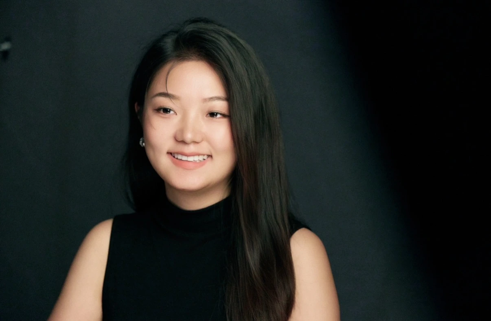
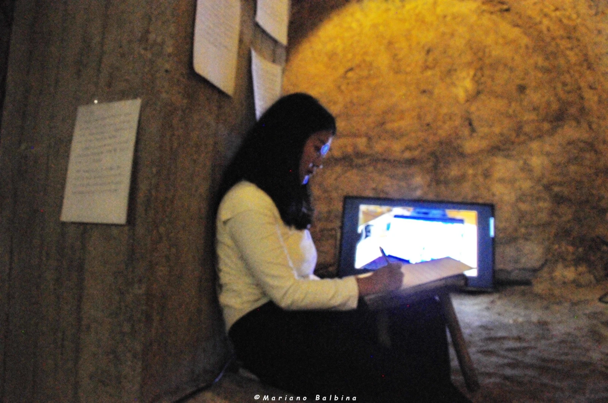
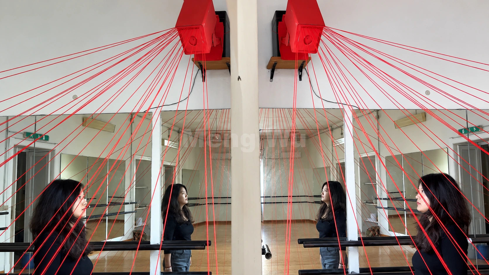
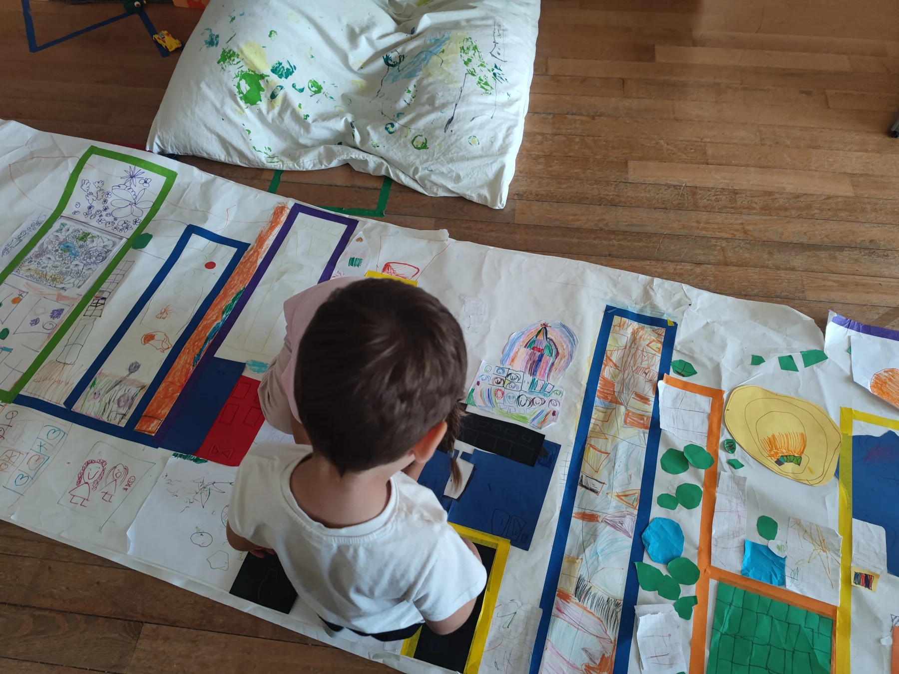
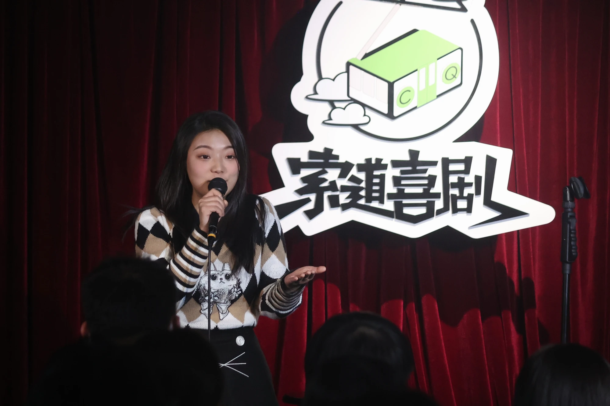
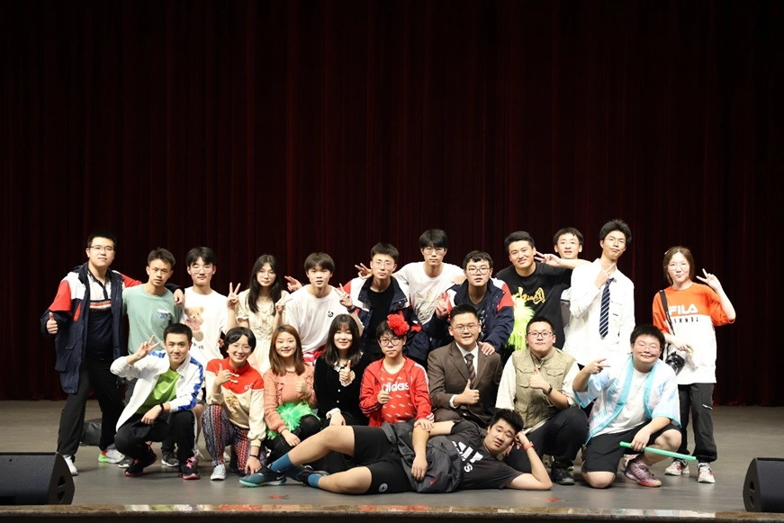

2026
International Youth Jury Member
FRONTDOC · International Film Festival, Aosta, Italy
Serving on the international youth jury at FRONTDOC.
Festival website ↗THEATRE & ARTS EDUCATION
Theatre practitioner
& educator

I am a theatre practitioner and educator with seven years of experience in teaching, theatre-making and intercultural arts projects.
My work explores the connections between memory, personal narrative and performance. Informed by arts and social responsibility, my practice draws on Theatre of the Oppressed, particularly forum theatre. Through workshops and collective projects in Europe and China, I explore the social and therapeutic potential of artistic creation.
2026
FRONTDOC · International Film Festival, Aosta, Italy
Serving on the international youth jury at FRONTDOC.
Festival website ↗Feb 2026
Film for Mother · Caochangdi Workstation
My documentary Echo (回响) was selected for Film for Mother in February 2026.
2025
The Mother Project · Cagliari, Italy
An international residency and immersive performance bringing together personal narrative, video art and collective creation.
View project ↗2024—2025
Sardegna Teatro · Italy
Contributed to the scenic setup of the Italian version of Where Do We Come From, What Are We, Where Are We Going 2.0 at Prototipi 2024. Also participated in workshops in object theatre, puppetry and performance.
View project ↗2024
Installation · Sardinia, Italy
An installation using red threads to make the invisible authority of surveillance visible, questioning the boundary between public safety and private life.
View project ↗2021
Suodao Comedy · Chongqing, China
Performed stand-up at Suodao Comedy in Chongqing.
View project ↗2017—2024
Mirror Light Theatre · Chongqing, China
Founded a school theatre troupe and directed seven original productions with secondary school students, developing work through writing, rehearsal and performance.
View project ↗2017—2024
High School Affiliated to Southwest University · Chongqing, China
Taught Chinese language and literature and served as a class teacher. Appointed to teach the elective “Avant-Garde and Experimental Theatre Appreciation” in the spring semesters of 2021 and 2022.
Teaching practice ↗Master’s programme
Université de Lille · France
2026
Metàfora · Barcelona, Spain
2023
University of British Columbia · Vancouver Summer Program, Canada
2014—2018
Southwest University · China
Second-tier recognition · Chongqing Educational Evaluation Research Society
National Special Prize · Senior secondary video category
Third Prize · Secondary school category · National competition
¹ 2022 assessment cycle; certificate issued in June 2023. Award titles are descriptive English translations.
2024 / 2026
Sibiu, Romania
Supported visiting companies, festival logistics and intercultural welcome. My 2026 experience was featured in Tribuna and in an interview with Romanian national radio.
Festival experience, press & radio ↗Selected projects
A closer look at my theatre and artistic work.

Seeing my mother as a woman, beyond the role of mother.

Making the invisible authority of surveillance visible.

Helping transform an early-years space into an immersive route through play.

On stage at Suodao Comedy.

A school theatre troupe as a place for young people to find their voices.
For theatre projects, arts education, collaborations and opportunities.